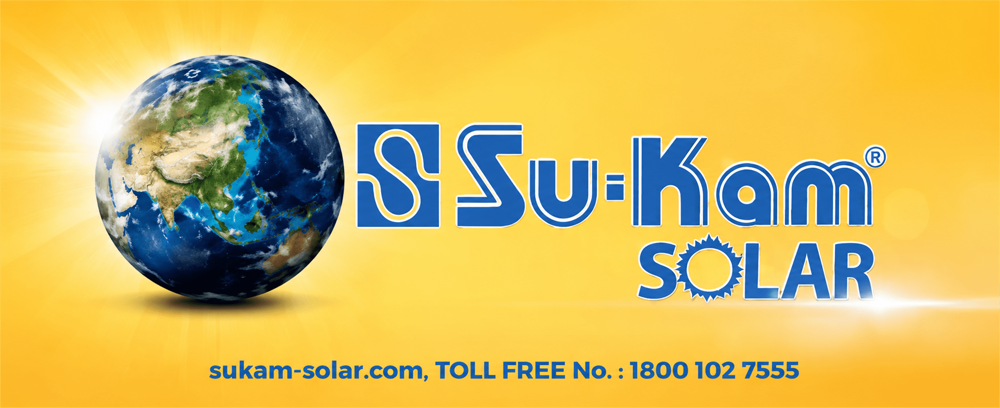

Solar solutions span products, environments and scales. The story needed to connect them without becoming a technical catalogue.
← Back to workPower from the sun.
Su-Kam · Solar Film
Power from the sun.
Progress for every horizon.

Project overview
Solar at scale.
Made relevant to life.
Solar energy is a technology story, but its value is human: dependable power for homes, infrastructure, enterprise and communities.
The film broadens Su-Kam Solar from a product identity into a vision of energy-led progress, moving across landscapes and applications while holding one bright, optimistic visual world.
- Format
- Brand Film
- Sector
- Solar Energy
- Core Thought
- Powering Progress
- Visual World
- Sun + Scale
The solar film
One source of energy.
Many expressions of progress.
The film connects solar power to the places it matters—homes, cities, infrastructure and open landscapes—building scale without losing human relevance.
The challenge
Make engineering feel expansive.
Make clean energy feel immediate.
The film had to communicate capability and credibility while keeping the future bright, accessible and human.
The narrative arc
From sunlight.
To shared momentum.
- 01
Source
Begin with the sun and Earth to establish energy as a universal, abundant possibility.
- 02
Scale
Move through solar-enabled environments to show relevance across infrastructure and daily life.
- 03
Resolve
Bring every setting back to Su-Kam as the connected power-solutions partner.
The visual language
Sunlit ambition.
Grounded applications.
Solar yellow creates energy and optimism. Deep blue carries technical confidence. A panoramic mix of landscape, infrastructure, heritage and modern life makes the promise feel national in scale.
The film craft
Technical scale.
Human energy.
Panoramic world
Wide compositions give infrastructure and landscapes the room to feel consequential.
Application range
Changing environments show how solar travels from individual lives to public systems.
Solar palette
Yellow light and Su-Kam blue create a distinctive, consistently branded visual rhythm.
Forward motion
The edit keeps moving toward larger expressions of possibility and progress.
The outcome
More than equipment.
A brighter power narrative.
The film positions solar as an active part of modern progress and gives Su-Kam a broad, optimistic platform extending beyond individual products.
Clear category
Renewable energy is translated into familiar places and tangible outcomes.
National scale
Multiple environments build a story that feels relevant across India.
Brand authority
Technical capability and future-facing optimism resolve in one identity.
Powered by sunlight.Built for what comes next.
Have a technology story with human potential?